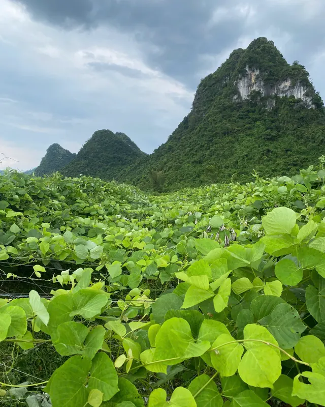
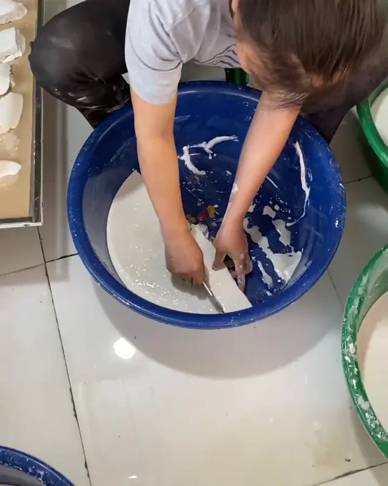
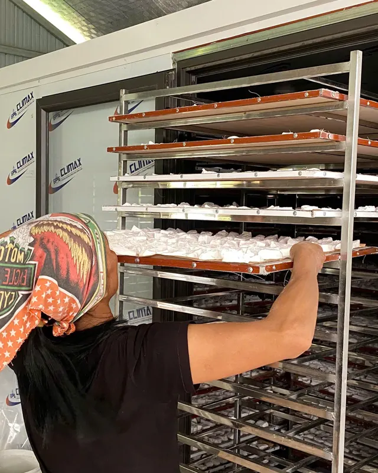
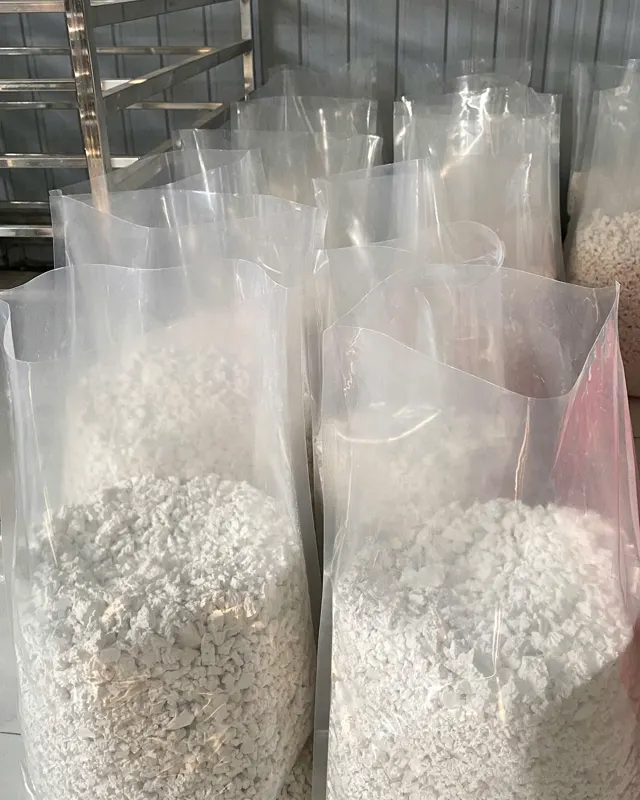

Home / Wholesale & export
Kudzu root starch for importers and wholesale buyers
100% kudzu root starch from the limestone hills of Lang Son, Vietnam. Approx. 10–20 tonnes per month, minimum export order 100 kg, shelf life 24 months.

Grown below the limestone hills
Filtered and settled by hand
Dried in a multi-tray oven
Bagged straight from the oven
Product specifications
Figures supplied by the cooperative. Printable version
| Product | Kudzu root starch (Vietnamese: tinh bột sắn dây), from kudzu roots (Pueraria) |
|---|---|
| Ingredients | 100% kudzu root starch. No additives, no bleaching agents |
| Process | Roots washed and crushed; starch filtered and settled by hand several times; dried in a multi-tray drying oven |
| Appearance | Dry, white starch in natural pieces |
| Packaging | 0.5 kg and 1 kg retail bags; 5 kg and 10 kg bulk bags. Other sizes: please ask |
| Shelf life | 24 months from the production date, unopened |
| Storage | Cool, dry place away from direct sunlight; reseal after opening |
| Production capacity | Approx. 10–20 tonnes per month |
| Minimum export order | 100 kg |
| Origin | Vu Lang commune, Lang Son province, Vietnam |
| Producer | The Hung Organic Cooperative (THOC) |
| Laboratory test report | Being prepared; ask us for the current status |
| Certification | No formal food-safety certification yet |
| Price, lead time, shipping terms | Quoted per order: tell us the destination country, volume and packaging |
Request a sample or a quote
We reply by email within 2 working days. You can also write to hello@thehungorganic.com or WhatsApp.
Questions buyers ask
Kudzu root starch is the product we offer for export. See how it is made.
Can you send a sample?
Yes. We can send a small sample so you can check the starch before ordering. Tell us your country and we will confirm the courier and cost with you first.
What is the minimum order for export?
100 kg. Smaller quantities are possible for samples and first trial orders; please ask.
How much can you supply?
The cooperative produces approximately 10 to 20 tonnes of kudzu root starch per month.
Do you have a laboratory test report or certificates?
A laboratory test report is being prepared and we will share it with buyers on request. Kudzu root starch does not yet hold a formal food-safety certification such as HACCP. We will update this page as documents are issued.
Do you export the Canh mandarins too?
No. Mandarins are fresh fruit and are currently sold within Vietnam only. For export we offer kudzu root starch.